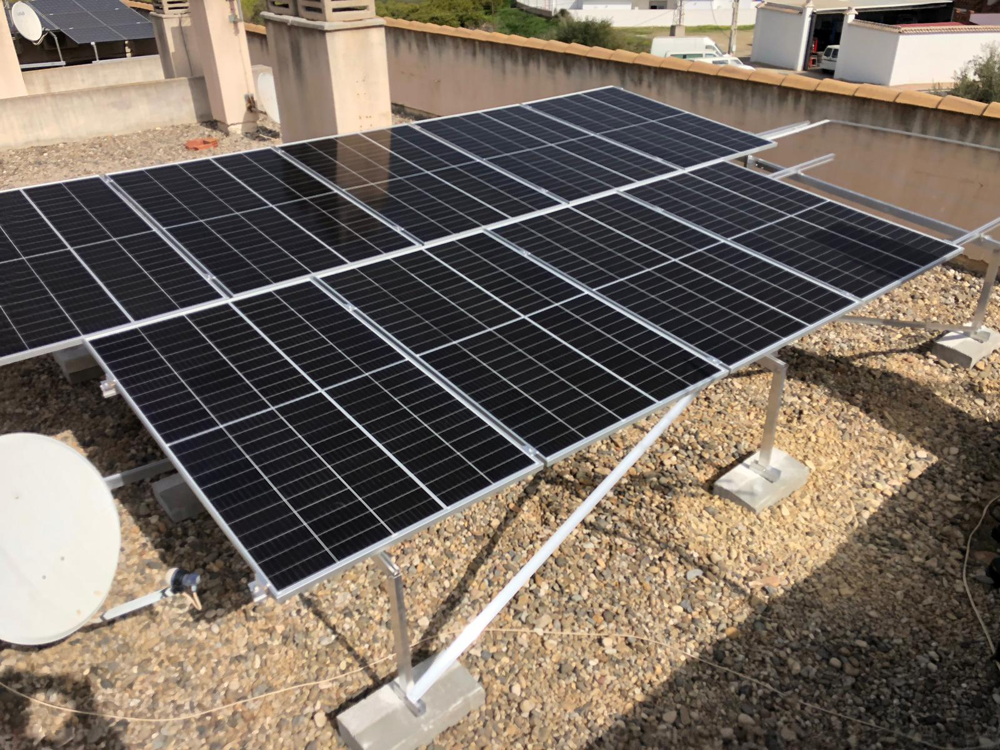

1. COMENZAMOS...
Navegando por los recursos del Proyecto EDIA de Cedec, he encontrado una situación de aprendizaje (SdA) muy interesante y práctica para trabajar la conciencia ambiental en el aula en 5º y 6º de Primaria. Se titula "Energía sostenible en nuestras vidas diarias" y me ha parecido un excelente punto de partida para un proyecto interdisciplinar.
